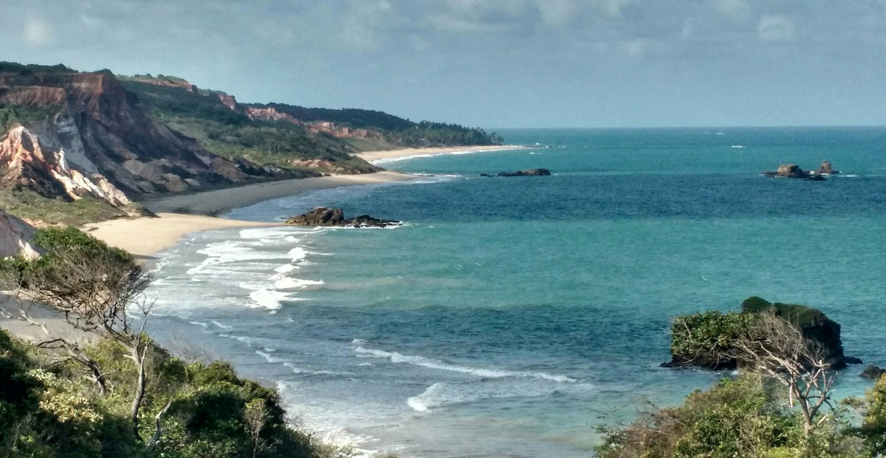
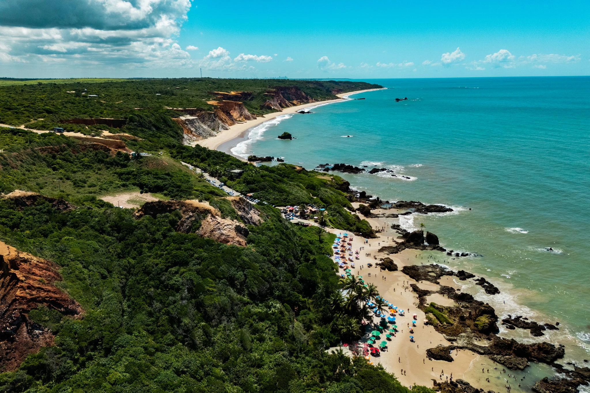
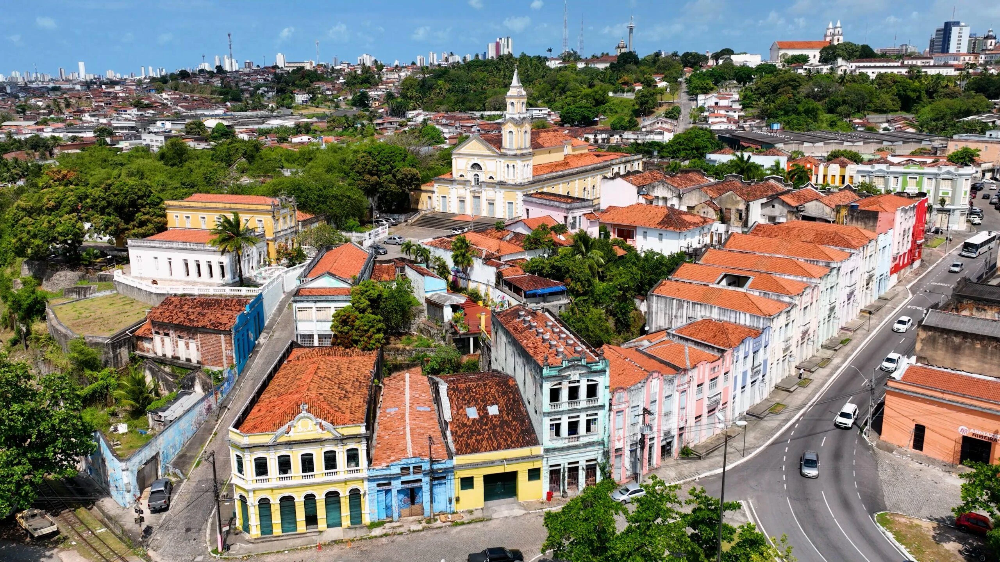
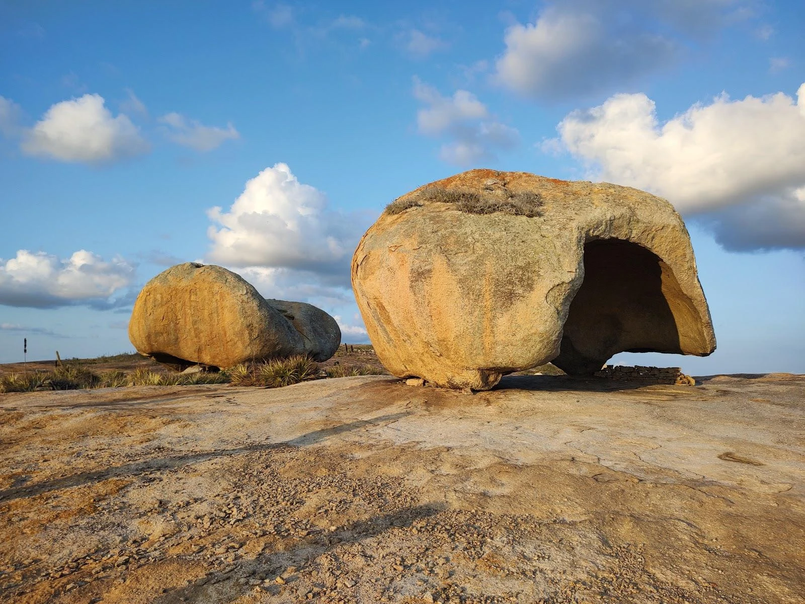
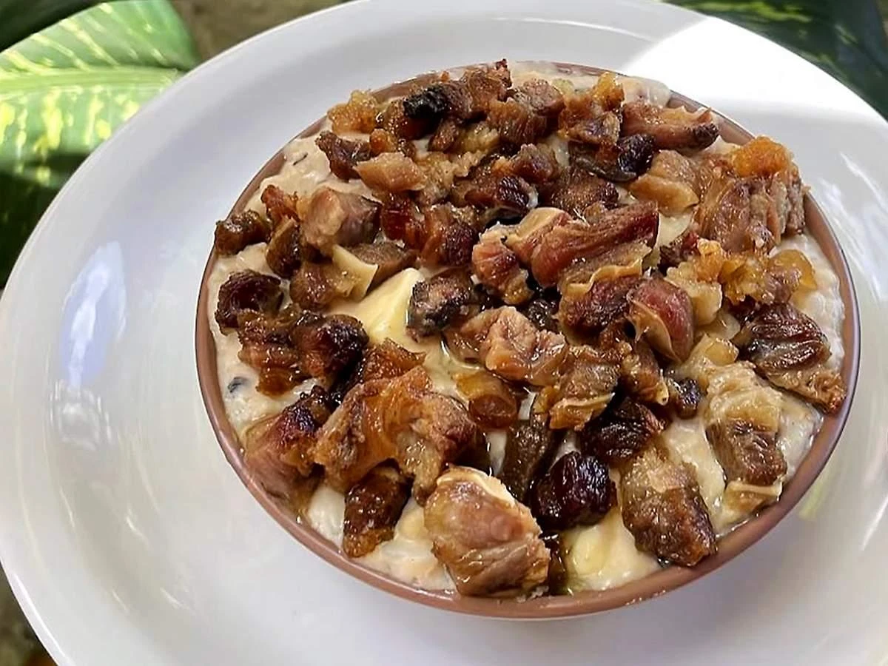
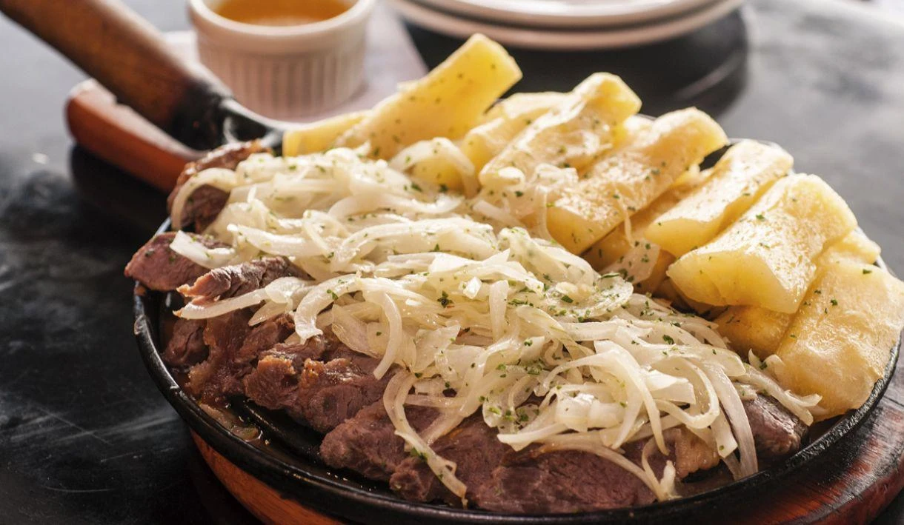
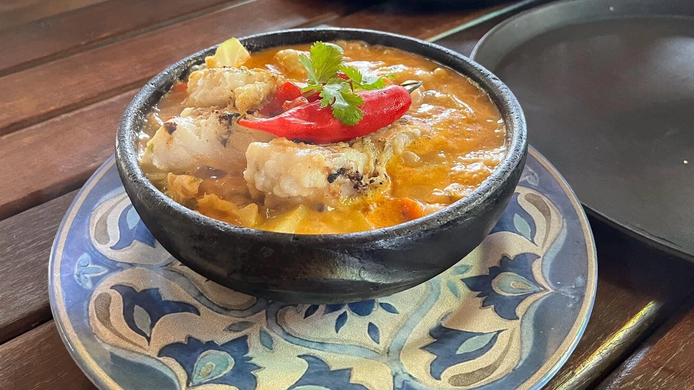

Capital
Joãa Pessoa
Conheça destinos, culturas, sabores e paisagens de todas as regiões
brasileiras.
Destinos, culturas e paisagens
incríveis te esperam.
A Paraíba é um estado localizado na Região Nordeste do Brasil, conhecido por suas belas praias, rica cultura popular, patrimônio histórico e clima agradável. O estado reúne paisagens litorâneas deslumbrantes, cidades históricas e tradições culturais marcantes, sendo um destino atrativo para turistas que buscam natureza, história e gastronomia.

Joãa Pessoa
Aproximadamente 56.469 km²
Cerca de 4 milhões de habitantes
Nordeste

Localizada no município de Conde, é famosa por suas águas cristalinas, falésias coloridas e por ser uma das praias naturistas mais conhecidas do Brasil. O cenário preservado atrai visitantes em busca de tranquilidade e contato com a natureza.

Repleto de construções coloniais, igrejas e casarões históricos, o local preserva parte importante da história paraibana. É um ótimo destino para conhecer a cultura e a arquitetura da capital.

Situado na região do Cariri paraibano, destaca-se pelas enormes formações rochosas espalhadas pelo terreno. O local oferece belas paisagens e é um dos cartões-postais mais famosos do interior do estado.

Prato tradicional preparado com arroz, feijão-de-corda, queijo coalho, carne de sol e temperos regionais. É uma das receitas mais representativas da culinária paraibana.

Combinação clássica da gastronomia nordestina, reúne carne salgada e macaxeira cozida ou frita. É muito apreciada em restaurantes e festas populares.

Prato tradicional preparado com peixe cozido em molho à base de tomate, pimentão, cebola e temperos regionais. Geralmente é servido com arroz, pirão e legumes, sendo muito apreciado nas cidades litorâneas do estado.
O clima é predominantemente tropical, com temperaturas elevadas durante a maior parte do ano. Os meses mais secos costumam ser os melhores para atividades ao ar livre.
O clima é predominantemente tropical, com temperaturas elevadas durante a maior parte do ano. Os meses mais secos costumam ser os melhores para atividades ao ar livre.
O litoral é ideal para quem busca praias e passeios marítimos, enquanto o interior oferece experiências culturais, paisagens naturais e turismo rural.
O litoral é ideal para quem busca praias e passeios marítimos, enquanto o interior oferece experiências culturais, paisagens naturais e turismo rural.
A culinária paraibana valoriza ingredientes regionais como mandioca, carne de sol, queijo coalho e frutos do mar, proporcionando sabores marcantes da tradição nordestina.
A culinária paraibana valoriza ingredientes regionais como mandioca, carne de sol, queijo coalho e frutos do mar, proporcionando sabores marcantes da tradição nordestina.